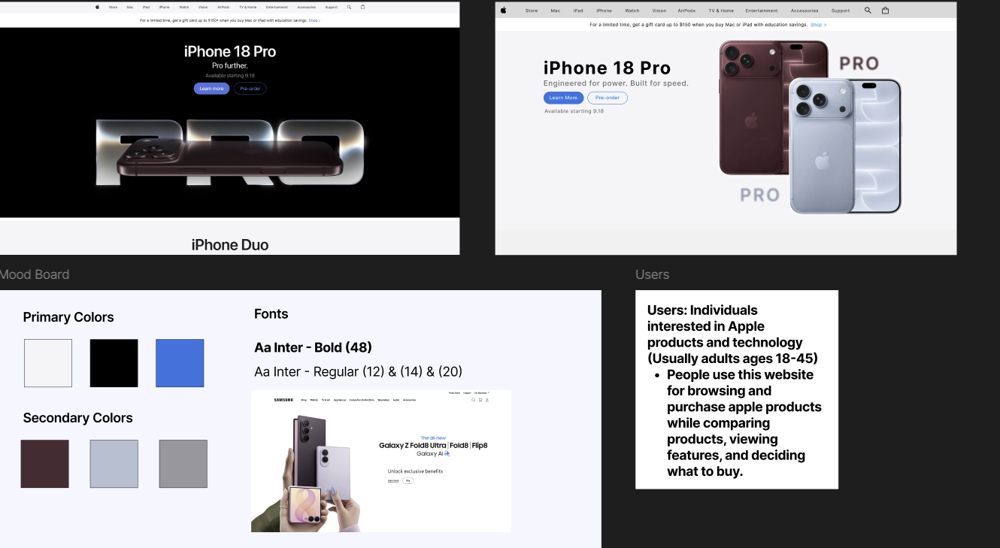
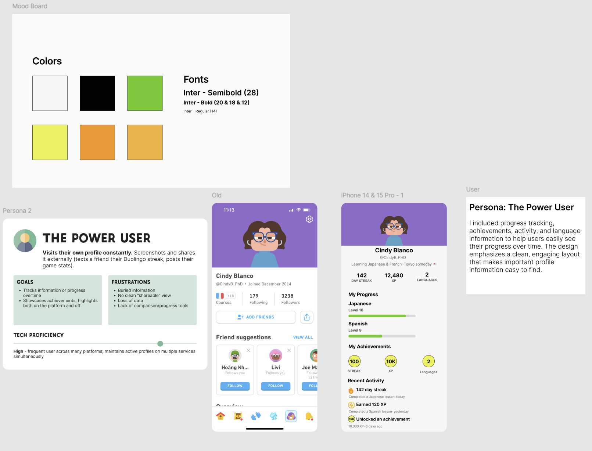
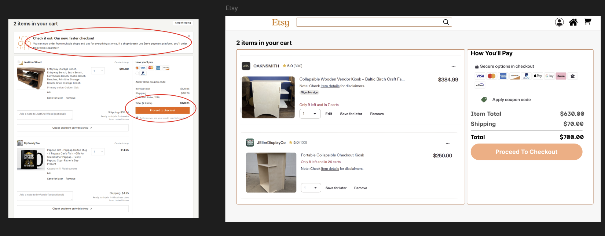

A hands-on UI/UX design bootcamp focused on interface design, prototyping, and visual hierarchy — developing interface concepts through Figma exercises and exploring AI-assisted design workflows.

Apple design study. I explored Apple's design language and interface patterns as part of my Figma work, focusing on visual hierarchy, consistency, and how design choices contribute to a clear user experience. I studied how interface elements work together to create a cohesive visual system. This helped me think more intentionally about spacing, hierarchy, and consistency when designing interfaces.

Duolingo profile redesign. I created a user persona to ground the work in real user needs, then redesigned Duolingo's profile pages around that persona. The before/after comparison shows how I restructured the profile layout and visual hierarchy to make progress and key information clearer and easier to navigate. Working from the persona kept my design decisions focused on what the user actually needs to see.

Etsy checkout redesign. I redesigned an Etsy checkout screen in Figma, rebuilding the layout with Auto Layout for responsive, maintainable components. The result is a cleaner checkout UI with improved structure and visual hierarchy, shown here alongside the original for comparison. Using Auto Layout kept the components consistent and easier to adjust as the design evolved.
Joined Bits of Good's Figma bootcamp at Georgia Tech to build strong, hands-on UI/UX and visual design skills.
Develop interface concepts through Figma exercises — layouts, components, overlays, and visual hierarchy.
Practiced interface design and prototyping in Figma, recreated polished layouts (including an Apple-inspired design), and researched current UI/UX trends and AI-assisted design tools.
Built a stronger design foundation and a portfolio of interface concepts demonstrating clean layouts, components, and visual hierarchy.
- 🎨 Interface design, prototyping & visual hierarchy in Figma
- 🍎 Recreated a polished, Apple-inspired interface design
- 🦉 Built a Duolingo user persona & redesigned profile pages (before/after)
- 🛒 Redesigned an Etsy checkout screen using Auto Layout
- 🔎 Researched current UI/UX trends and AI-assisted design workflows